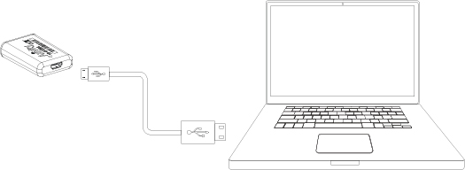
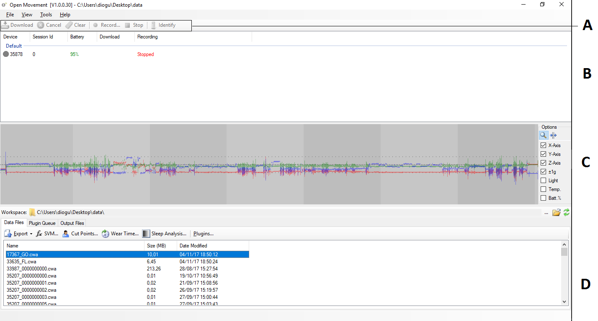
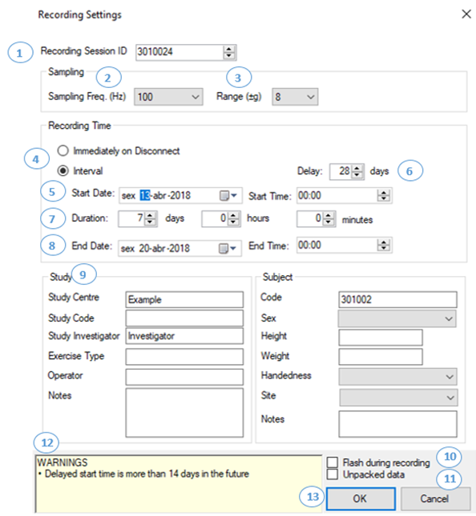
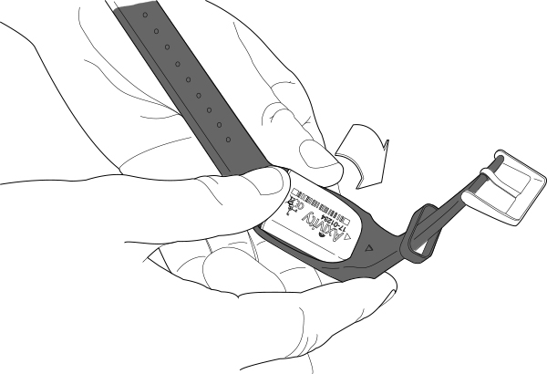
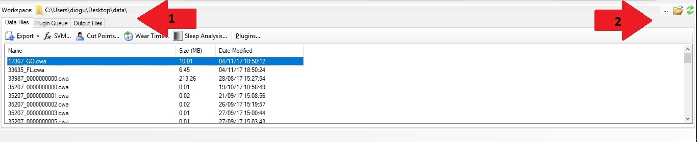

1. Connecting to a computer
The computer provided to support this trial has, on the Desktop, a shortcut to an application called OMGUI. If you want to set up a trial or download data from a sensor, you will do it through this application

-
How to open OMGUI?
Double-click the OMGUI shortcut on the Desktop.
-
How to connect the AX3 device to a computer?
Connect the AX3 device to an usb port with the cable provided.
-
Is AX3 really connected?
If a new device appears on the Device Browser Panel, than the AX3 is connected and ready to be used.
2. Learning to work with OMGUI
OMGUI (Open Movement Graphical User Interface) is the native application to operate with the AX3 activity sensor.
-
What can I do with OMGUI?
You will be able to check the status of the devices (battery, data, and recording status), set up data collection, and download the data files from the sensor
-
What is Top Menu (A) for?
It will only available when a device is selected. Options will be Download data from device, Clear the data from the device, Schedule a recording, Stop a recording, Cancel an on progress Download and Identify which AX3 device you are interacting with (It will flash blue and purple alternatively ).
-
What is Device Browser panel (B)?
you will be able to see a list of the AX3 devices connected to the computer and their statuses. You can select a device by clicking on its row.
-
What is the plot area (C)?
If the device has data, you will see it plotted here.
-
What is Data Workspace(D) ?
You will be able to set up where you want your files to be saved, and to see the list of downloaded files.
3. Setting up Data Collection
Before you hand a device to a subject, you will need to set up data collection. In parallel, while the device is connected, it will be charging.
-
How can I put AX3 in recording Mode?
● Open OMGUI and connect the AX3 sensor to the computer with the USB cable.
● Select the device in the Device Browser Panel.
● If the battery is low, keep it connected until it charges completely (a value above 85% is considered acceptable to issue for usage).
● If the device shows to have data, press “Clear” in the Top Menu.
● Press the Record button, in the Top Menu.
-
What Recording Session ID should I put (1) ?
It will be the Visit Number followed by the Patient Number (of the visit, when the device is handed to the subject).
Visit Codes: V2B, V3, and V4.
Example: Subject no. P452, visit V2B, Recording Session ID V2B_P452
-
What about the sampling (2)(3) ?
Sampling Frequency: 100.
Sampling Range: 8.
-
How should the recording setting be (4)(5)(6)(7)(8) ?
Recording Time Schedule: Interval.
Start Date: it should be set to three days before the next onsite visit. As an example, if the visit is on the 14th (any time), the start date will be on the 11th.
Start Time: should be set to 00:00.
Delay: do not change this value.
Duration: the value should be of 5 days.
End Date: do not change this value.
-
How should I proceed with other options (9)(10)(11)(12) ?
Study Centre: Put the initials.
Investigator: Put the initials.
Subject: input the Patient number.
Flash when Recording: Do not tick it.
Unpacked data: Do not tick it.
Warnings: Its an alert to tell you aditional information, like if the battery status will cover all the days selected. In general it should not invalidate the record process, but if you have doubts please contact us.
-
Do I need to do anything else ?
Please disconnect the device from the computer. The record in now set and will start at the date and time scheduled.
Please do not forget to document the serial number of the sensor in the medical records of the subject and in e-CRF.
4. Wearing the activity bracelet
We kindly ask you to wear a bracelet with an activity sensor for a period of three days prior to some of your on-site visits. This bracelet is designed to be the least intrusive and you should be able to perform your daily activities without any negative impact in your life throughout these days. Below is a simple set of instructions.
-
When to wear the bracelet?
We kindly ask you to wear the bracelet the complete three days before the on-site visits V2B, V3, and V4. For example, if you have an appointment on the 14th, you should wear the bracelet on the 11th, 12th, and 13th, and leave it on until the appointment. We will call to remind you to put the bracelet approximately one day before you have to.
-
When should you take the bracelet off?
During the three days, you should wear the bracelet continuously, including during the night and bath time (it is waterproof). However, if you feel uncomfortable doing any particular activity with the bracelet (for example, while taking a bath), you may remove it temporarily. You should put it on again right away when possible.
-
How to wear the bracelet?
It should be worn on the wrist of your non-dominant hand, as if it was a regular watch.
-
What if the sensor gets out of the bracelet?
You should not remove the sensor from the bracelet. However, if that happens, you just have to put it back, as in the Figure. The sensor should be inserted in the bracelet with the letters (“Axivity”) and a small arrow visible to you. Then, the arrow on the bracelet should align with the arrow on the sensor. Insert it manually without any auxiliary tool.
-
What if the bracelet starts flashing a brief red light?
It is not expected that the device runs out of battery. However, if the bracelet starts flashing a red light, it means that it somehow happened. In that case, we ask you to report to the site for a replacement.
5. Collecting and storing the data
When the trial subjects bring the bracelet to the visits V2B, V3, and V4, you will need to download the data to the PC.
-
How can I Store data?
● Open OMGUI and connect the sensor (after removing it from the bracelet) to an USB port on the computer
● When the device is recognized, check the status of the recording. If it still shows as being recording, press “Stop”, in the Top Menu
● Press download button.This will take a while: you will see the progress of the download in the respective field, in the Device Browser Panel; make sure it gets to 100%.
-
What is Data Workspace Panel (1)(2) ?
It shows the current workspace (1) with all the files associated with it and also allows to select a new workspace (2).
-
How can I select a new workspace?
Click on Choose Working Folder (2) and select a new one.
If they are not created, create the following folders in your desktop: there should be a top folder named “data”. Inside that folder, there should be a sub-folder for each subject, i.e., the folder is named with the Patient Number. Inside each subject’s folder, there should be a folder for each visit (V2B, V3, and V3B). Select the folder for the current Subject and Visit.
-
How can I assure if data was saved?
Please go to the folder in the desktop and check if the file was correctly saved in the subject and visit subfolders.
Take a look at the Data Preview Panel. If the graph shows no activity, try to understand if it wasn’t worn by the subject, and re-explain the procedure
To verify if the device was worn please select it on the Data Workspace Panel and press Wear Time. Leave the epoch field with 1 and then press ok. Finally open the new created file (It should be on the desktop under the same folder as the downloaded file ).
-
How should I leave the device ?
Please Clear is contents, by selecting the device and press clear on the Top Menu.
Finally, disconect the sensor from the USB port, if you are not using more.
Download
Here you can have the Investigators instructions.
Here you can have the Patients instructions.
Video Tutorials
Here are some video tutorials to help you
5 Collecting and storing the data

3 Setting up Data Collection

2 Learning to work with OMGUI

1 Connecting to a computer

BIA-91067-405
These are the main contacts to reach out.
If you have any doubt or suggestion please send us an email.